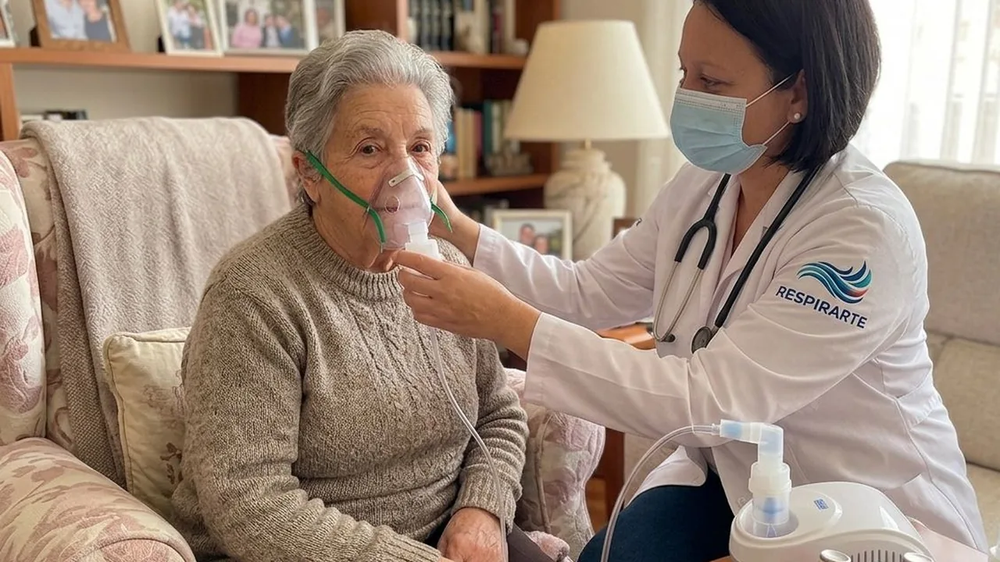
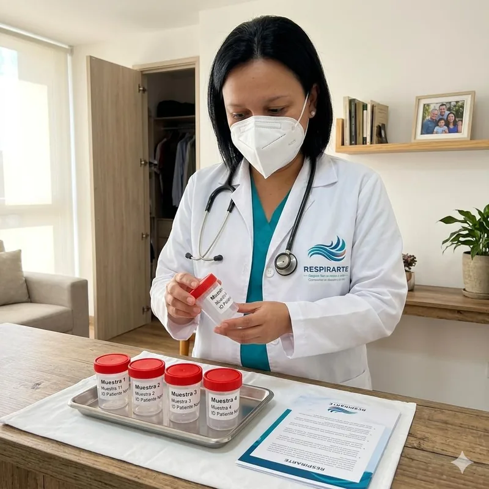

Terapia respiratoria domiciliaria
Atención respiratoria en casa para pacientes agudos, crónicos, pediátricos, adultos o en recuperación.
Atención respiratoria domiciliaria en Bogotá
Respirarte acompaña a pacientes y familias con servicios respiratorios domiciliarios, atención humana y orientación clara para solicitar una cita.
La cita queda como solicitud y será revisada por la doctora antes de confirmarse.

Sobre la doctora
La Dra. Paola Andrea D’Aleman Cataño acompaña a pacientes y familias que necesitan orientación y atención respiratoria domiciliaria en Bogotá, con un enfoque cercano, cuidadoso y centrado en la seguridad del paciente.
En Respirarte, cada solicitud se revisa antes de confirmar la cita, para cuidar la disponibilidad, el contexto del paciente y las condiciones necesarias para una atención responsable en casa.
Formación destacada
Estos distintivos resumen áreas de formación relevantes. No reemplazan la valoración profesional ni constituyen una promesa de resultado clínico.
Servicios
Respirarte ofrece servicios orientados al cuidado respiratorio, la recuperación funcional, la educación preventiva y el acompañamiento seguro de pacientes, familias y organizaciones.
Atención respiratoria en casa para pacientes agudos, crónicos, pediátricos, adultos o en recuperación.
Apoyo en pruebas respiratorias para valorar evolución, capacidad pulmonar y seguimiento clínico.
Acompañamiento para fortalecer la capacidad respiratoria, la movilidad y el retorno progresivo a la funcionalidad.
Preparación en técnicas de respiración, manejo de ansiedad y educación para el cuidado antes y después del parto.
Orientación para empresas en prevención, educación respiratoria y cuidado de equipos expuestos a riesgos respiratorios.
Cobertura y disponibilidad
Las citas se manejan por solicitud y por franjas horarias. La disponibilidad puede variar según zona de cobertura, agenda de la doctora y condiciones del paciente. La confirmación final siempre se realiza después de revisar la solicitud.
Cómo funciona
La solicitud por WhatsApp no equivale a una cita confirmada. En caso de urgencia, debe acudir a los canales de atención médica inmediata.

Preguntas frecuentes
Sí. Respirarte ofrece atención respiratoria domiciliaria en Bogotá y zonas de cobertura definidas.
No. Elvira registra la solicitud y la doctora revisa disponibilidad antes de confirmar.
La atención se maneja por franjas horarias, no por hora exacta garantizada.
Contacto
Escríbanos para iniciar una solicitud de atención respiratoria domiciliaria.
Abrir WhatsAppReemplazaremos este número cuando el WhatsApp oficial de Respirarte quede activo.